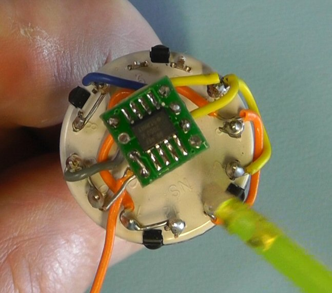
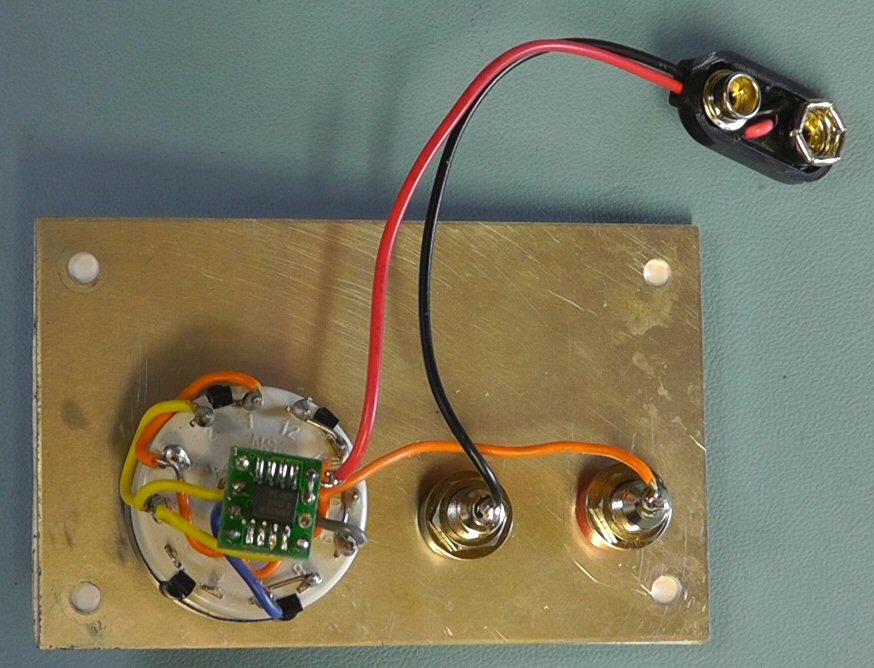

In this project we will design and built a Low Current Reference Source which has four switched ranges, namely; 100μA, 200μA, 300μA and 400μA. No calibration is required and it will operate from a standard 9 volt battery with no on/off switch. The unit will have an accuracy of ±0.5% or better.
This project uses the Texas Instruments REF200 Dual Current Source and Current Sink I.C. This I.C. can operate over a wide voltage range from 2.5 V to 40 V and still maintain the accuracy of the output current source. Accuracy of the I.C. is ±0.5%. It also has a very low temperature Coefficient: ±25 ppm/°C.
From the links below you can download the schematic, wiring diagram and front panel artwork for this project.
Low_Current_Ref_Schematic.pdf
Low_Current_Ref_Wiring.pdf
Low_Current_Ref_front_panel.pdf


I am not understanding the reason there are 3 poles on the switch. Why not just 2 poles?
100µA (1) is always connected to the output. There is no need for a switch pole for that line. 100µA (2) is connected in position 2 and 4 = 1P4T, 2 wires
200µA (3) (mirror) is connected in position 3 and 4 = 1P4T, 2 wires
what am i missing?